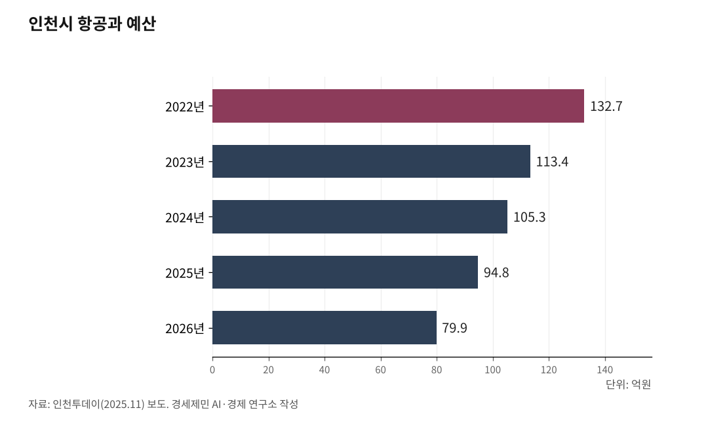

배당 3조3500억 빠져나간 인천공항, 이제 통합까지… 인천시 항공예산 40% 삭감
4월 8일 국회 예결위, 공항 통합 논의 사실상 인정
인천공항 배당 누적 3조3500억 중앙행, 인천시 항공예산은 80억
공항경제권 특별법 국토위 통과, 인천시 지분 확보 방안은 공백
인천국제공항(ICN)을 운영하는 인천국제공항공사(IIAC)가 2007년부터 2025년까지 정부에 배당한 금액이 약 3조3500억원에 이른다. 같은 기간 인천공항공사 자금이 교통시설특별회계 공항계정으로 빠져나가 14개 지방공항 건설·시설 개선에 쓰인 금액도 3조원을 넘는다. 반면 인천시 항공예산은 2022년 132억원에서 2026년 80억원으로 4년 사이 40% 줄었다.

1. 인하대 토론회 "공항경제권 10년 공회전"
지난 8일 인천 남구 인하대 60주년 기념관에서 '2026 연속 정책 공론장 6회-고성장 인천 미래 신산업, 항공우주 그리고 방산' 토론회가 열렸다. 발제는 이희정 항공우주산학융합원 부원장과 유창경 인하대 항공우주공학과 교수가 맡았다.
토론에는 정영철 국방기술진흥연구소 연구위원, 최기상 인천테크노파크 항공센터장, 신규철 인천시 항공민관협력회의 의장, 대한항공 항공정비(MRO) 전략 담당자가 참여했다.
이희정 부원장은 발제에서 "과거 공항이 여객과 화물을 처리하는 이동 플랫폼이었다면 현재는 유통·관광·항공정비·제조까지 확장되는 산업 플랫폼으로 진화하고 있다"고 말했다.
이 부원장은 이어 "인천공항은 183개 도시와 연결된 글로벌 허브지만 인천에 실제 머무는 외국인 비율은 6.3%에 불과하다"며 "공항경제권 논의는 10년 넘게 이어졌지만 실행 조직과 예산이 없는 상태"라고 말했다.

2. 같은 날 국회 "공항 통합 살펴보는 중"
같은 날 국회 예산결산특별위원회에서는 공항 운영기관 통합 논의가 현재진행형이라는 정부 답변이 나왔다. 인천투데이가 지난 9일 보도한 내용을 보면, 배준영(국민의힘·인천 중구·강화·옹진) 의원이 구윤철 경제부총리 겸 재정경제부 장관에게 공항 통합 논의 여부를 물었다.
구 부총리는 "잘 살펴보고 있는 과정에 있다"고 대답했다. 통합 철회 의향을 묻는 질문에는 "찬반이 있다는 것을 안다"며 "여러 소리에 귀 기울여 잘 살펴보겠다"고 대답했다.
배준영 의원은 이 자리에서 "국토부 세출예산 교통시설특별회계 공항계정으로 새만금공항, 대구경북신공항, 울릉도공항, 가덕도신공항 건설 등에 인천공항공사 자금 3조3000억원 이상이 나갔다"며 "전국 공공기업 342개 중 인천에 3%도 없는 상황에서 공항 경쟁력을 약화해서는 안 된다"고 지적했다.
정부가 추진하는 것은 인천국제공항공사와 한국공항공사, 가덕도신공항건설단 3개 기관 통합이다. 인천지역 시민·노동단체는 오는 5월 10일 인천시청 인근에서 '인천시민 총궐기대회'를 연다.
3. 배당 3조3500억, 나간 돈은 어디로 갔나
인천공항공사가 2026년 3월 27일 개항 25주년 성과 발표에서 밝힌 자료를 보면, 공사는 2007년부터 2024년까지 정부에 약 3조269억원을 배당했다. 2025년 배당 예정액 3194억원을 합하면 누적 배당은 약 3조3500억원이 된다.
공사 2025년 실적은 매출 2조9684억원, 당기순이익 6944억원이다. 순이익의 54%인 3750억원은 시설 안전과 서비스 개선에 재투자하고 46%인 3194억원은 정부에 배당금으로 납부한다. 정부 배당 3194억원, 국세 1315억원, 지방세 738억원을 더하면 공사가 2025년 한 해 국가에 내는 돈은 5000억원을 넘는다.
경향신문이 2024년 6월 11일 보도한 내용을 보면, 정부가 인천공항공사로부터 가져간 배당금은 정부 관련 기업 중 금융기관을 제외하면 1위다. 코로나19 위기였던 2020~2022년 공사가 1조7090억원 적자를 기록할 때 정부는 한 푼도 지원하지 않았다.
인천일보가 2026년 3월 22일 보도한 내용을 보면, 인천공항공사가 2007년부터 교통시설특별회계 공항계정을 거쳐 14개 지방공항 시설 개선과 확장에 지원한 금액은 약 3조4000억원에 이른다.
4. 인천시 항공예산 4년 새 40% 삭감
인천시는 2025년 '인천시 항공산업 육성 기본계획(2025~2029)'을 내놓으며 5년간 7107억원을 투자해 글로벌 선도 항공우주 혁신도시를 만들겠다고 발표했다.
인천투데이가 2025년 11월 보도한 내용을 보면, 인천시 항공과 예산은 2022년 132억7406만원에서 2026년 79억9054만원으로 4년 사이 52억8352만원 줄었다. 삭감률은 약 40%다. 2023년 113억3906만원(-14.6%), 2024년 105억2594만원(-7.2%), 2025년 94억8429만원(-9.9%), 2026년 79억9054만원(-15.7%) 순으로 해마다 감소했다.
핵심 사업은 더 많이 깎였다. 도심항공교통(UAM) 체계 구축사업 예산은 2022년 35억원에서 2026년 10억8300만원으로 4년 사이 69% 줄었다. 인천항공산업 산학융합지구 조성 예산도 2022년 40억9000만원에서 2026년 11억9000만원으로 감소했다. 인천국방벤처센터 설립 예산 5억원은 2023년부터 2026년까지 4년 연속 반영되지 않았다.
신규철 의장은 토론문에서 "항공산업육성계획으로 5년간 7107억원을 투자하겠다고 발표했으나 항공 분야 예산은 4년 사이 40% 삭감됐다"며 "이런 부끄러운 현실이 작금의 인천시 항공 정책의 현주소"라고 말했다.
5. 스키폴은 암스테르담시가 20%, 인천은 정부 100%
국민의힘 배준영 의원이 대표 발의한 '공항경제권 개발 및 지원에 관한 특별법안'이 2026년 4월 국회 국토교통위원회를 통과했다. 법안은 공항과 주변 지역을 산업·물류·관광 기능이 결합된 경제 거점으로 만들고 통합 지원 체계를 구축하는 내용을 담았다.
해외 주요 공항은 중앙정부와 지자체가 지분을 나눠 갖는다. 네덜란드 로열 스키폴 그룹(Royal Schiphol Group) 공식 자료를 보면, 스키폴공항(AMS) 지분은 네덜란드 정부 69.77%, 암스테르담시 20.03%, 로테르담시 2.20%, 프랑스 파리공항공사(Groupe ADP) 8.00%로 나뉘어 있다. 독일 프랑크푸르트공항(FRA)은 헤센 주정부가 31.41%, 프랑크푸르트·마인시가 20.06%를 보유한다. 스위스 취리히공항(ZRH)은 취리히주 33%, 취리히시 5%를 가진다.
인천국제공항공사 지분은 정부가 100%를 갖고 있다. 인천시 지분은 0%다. 인천국제공항공사법 제4조는 국가 또는 지방자치단체가 공사 사업에 필요한 동산 또는 부동산을 현물로 출자할 수 있다고 규정한다.
신규철 의장은 "제5활주로와 제3터미널 건설, 백령공항과 배후지 개발 등에 인천시가 현물 출자로 참여하는 방안이 법적 근거를 갖고 있다"며 "공항공사와 지방정부가 각자 사업을 추진하는 구조에서는 공항경제권이 제대로 형성되기 어렵다"고 말했다.
6. UAM 실증·연안해운·서해 도서, 인천의 또 다른 광맥
유창경 교수는 발제에서 "인천은 국제공항과 경제자유구역을 동시에 갖춘 지역으로 민·군 통합 항공 모빌리티 실증과 테스트베드 구축이 가능하다"고 말했다. 정영철 연구위원은 "기체 개발 후 인증이 아니라 인증에서 허브로, 생태계로, 방산 확장으로 이어지는 순서로 접근해야 한다"며 해병대 상륙·침투 작전, 응급 후송(MEDEVAC, Medical Evacuation), 감시정찰(ISR, Intelligence, Surveillance and Reconnaissance) 등을 인천과 서해 도서 기반으로 실증하는 방안을 제안했다.
인천공항공사는 2025년 10월 16일부터 31일까지 12일간 인천 서구~계양구 아라뱃길 공역 44.57㎢ 구간에서 'K-UAM 그랜드챌린지' 2단계 도심 실증을 수행했다. 대한항공·현대자동차·KT·현대건설과 구성한 'K-UAM 원팀' 컨소시엄의 주관사로 교통관리체계와 버티포트(vertiport, eVTOL 이착륙장) 운영 2개 분야에서 도심항공교통법에 따른 첫 실증사업자로 지정받았다.
인천 앞바다 서해 도서 연결도 동시에 추진되고 있다. 한국해양교통안전공단 자료를 보면, 인천항 연안여객터미널에서 백령·대청·소청도, 대·소연평도, 덕적도 등으로 여객선이 운항한다. 인천에서 백령도까지는 여객선으로 약 4시간이 걸린다. 국토교통부는 백령공항 건설에 국비 2018억원을 투입해 2026년 착공, 2029년 준공한다는 계획이다. 50인승 항공기가 이착륙할 수 있는 활주로 1200m를 갖추면 인천~백령 이동 시간은 약 1시간으로 줄어든다.
국토부는 2025년 'K-드론배송' 실증 지역을 전국 166곳으로 확대했다. 인천에서는 덕적도·소야도·대이작도·자월도·영흥도·문갑도·굴업도 등 옹진군 도서 지역이 포함됐다. 인천시는 2022년부터 4년 연속 국토부 드론 실증도시 구축사업에 선정돼 서해5도 행정서비스 드론 고도화 사업을 수행하고 있다.
전기수직이착륙기(eVTOL, electric Vertical Take-Off and Landing) 화물 기체 상용화도 진행 중이다. 항공 전문매체 '드론라이프(DRONELIFE)' 2025년 12월 17일 보도를 보면, 이스라엘 항공기 제조사 AIR는 2025년 12월 생산형 화물 eVTOL 'Air One Cargo' 첫 기체를 출고했다. 탑재량은 최대 250kg이다. 한국항공우주산업(KAI)은 5인승 eVTOL 초도비행을 2027년 6월, 상용 인증기 출시를 2031년으로 잡고 있다.
참고문헌
인천국제공항공사, "인천국제공항 개항 25주년 성과 발표", 2026.3.27., https://www.airport.kr
인천투데이, "박찬대 '근거 없다'던 공항 통합 논의 진행형···유정복 '강경 대응'", 이종선 기자, 2026.4.9., https://www.incheontoday.com
경향신문, "정부, 인천공항 적자 땐 한푼도 안 줘놓고···흑자 땐 절반 가까이 꿀꺽", 2024.6.11., https://www.khan.co.kr/article/202406111041001
인천일보, "인천공항, 지방공항에 3조4000억 퍼줬다", 김기성 기자, 2026.3.22.
인천투데이, "항공우주 육성 7000억 투자한다던 인천시 항공예산 '싹둑'", 2025.11., https://www.incheontoday.com/news/articleView.html?idxno=311131
중부일보, "배준영 의원, 공항경제권 특별법 국토위 통과", 2026.4., https://www.joongboo.com/news/articleView.html?idxno=363721677
Royal Schiphol Group, "Shareholder Information", https://www.schiphol.nl/en/schiphol-group/shareholder-information
2026 연속 정책 공론장 6회 '고성장 인천 미래 신산업, 항공우주 그리고 방산' 토론회 자료집, 2026.4.8., 인하대 60주년 기념관
국토교통부, "K-UAM 그랜드챌린지 2단계 도심 실증 본격 착수", 2025.10.22., https://www.molit.go.kr/USR/NEWS/m_71/dtl.jsp
국토교통부, "K-드론배송 실증지역 전국 166곳 확대", 2025., https://www.molit.go.kr/USR/NEWS/m_71/dtl.jsp
한국해양교통안전공단(KOMSA), "인천항 연안여객 운항정보", https://www.komsa.or.kr
DRONELIFE, "AIR Delivers First Production-Ready eVTOL Cargo Aircraft", 2025.12.17., https://dronelife.com/2025/12/17/air-delivers-first-production-ready-evtol-cargo-aircraft/